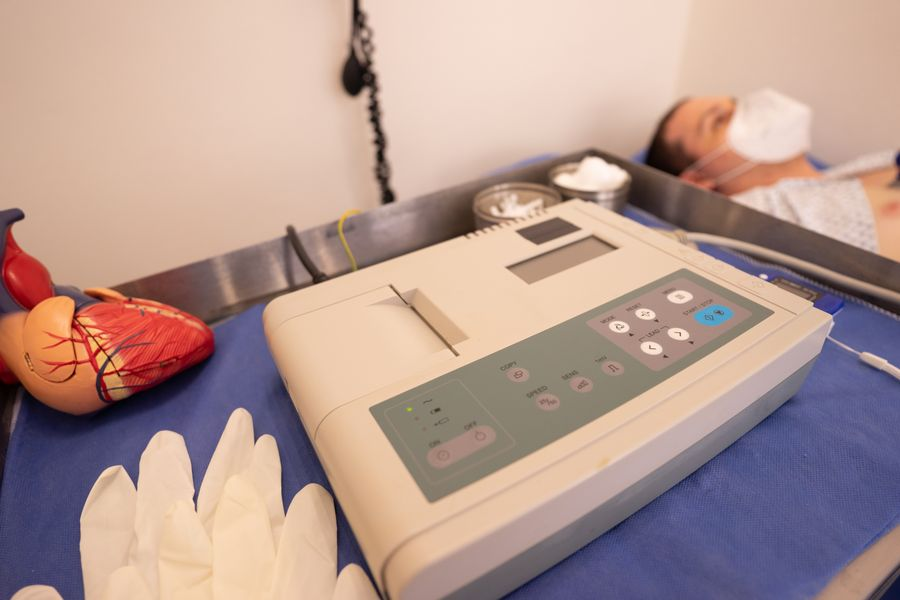

Particulars
Particulars i famílies
Formació oberta en primers auxilis, RCP, DEA i resposta davant d'emergències quotidianes.
A casa, al carrer, a l'escola o fent esport: en una emergència, els primers minuts els dona qui té al costat.
Tria el que més s'ajusti a tu o al teu grup.

Formació oberta en primers auxilis, RCP, DEA i resposta davant d'emergències quotidianes.

Escoles, clubs esportius, associacions i col·lectius, amb continguts adaptats a cada grup.
Formació pensada per al públic general: ni Deep Dive ni continguts clínics avançats.
Formació oberta per a persones i grups, amb materials clars i pràctics.
Practiquem amb maniquins i escenaris reals perquè sàpigues què fer i com fer-ho.
Sessions per sensibilitzar famílies, escoles i col·lectius sobre com actuar davant una emergència.
Comencem des de zero i acabes amb una pràctica que pots fer servir el mateix dia.
«Vaig anar amb la meva filla de 15 anys. En dues hores vam passar de no saber què fer a practicar una RCP i un DEA amb el maniquí. Clar, pràctic i sense tecnicismes.»
T'ho ensenyem de manera pràctica i propera, sense necessitat de tenir formació sanitària.